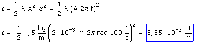
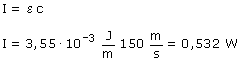

a)  La suma de las energías de oscilación de las partículas contenidas en 1 m de cuerda es 3.55·10-3 J b)  Otra forma de verlo: en un segundo la onda avanza 150 m, las particulas contenidas en este trayecto comienzan a oscilar lo cual requiere una energía de 0,532 J (150 m·3.55·10-3 J/m). Por tanto la onda tendrá que transportar 0.532 J cada segundo |